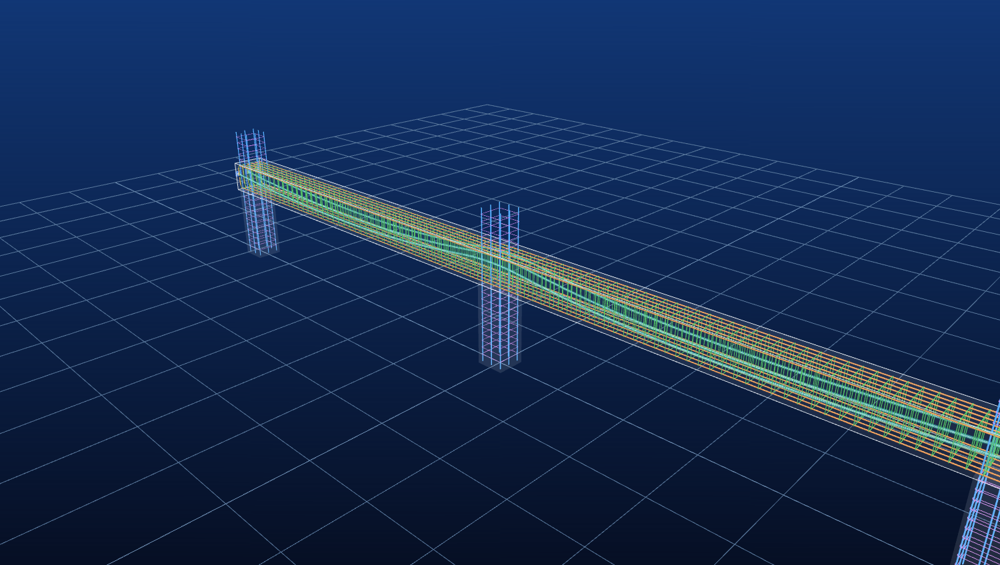
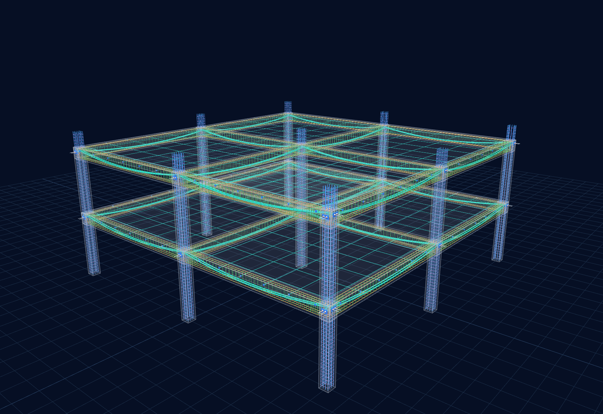

Structural engineering · 3D tools
Post-tensioned concrete
Two interactive 3D tools: a continuous PT beam and a 2-storey PT building. Change the inputs and the model rebuilds live.

Tool 1
Post-tensioned continuous beam
- Spans, width, depth and cover
- Draped tendons, ducts and strands
- Anchorages, main and additional bars, multi-leg stirrups
- Section cut, clash check, export
Open beam tool →
Tool 2
2-storey post-tensioned building
- 3 × 3 columns, beams and monolithic slabs
- Beam tendons with strands, slab tendons, anchorages
- Beam stirrups, column ties, slab top and bottom bars
- Footings with bent bars, colours and visibility controls
Open building tool →
Visualization only. Layouts are illustrative assumptions, not a structural design and not for construction without independent engineering design and verification. Built with Three.js.